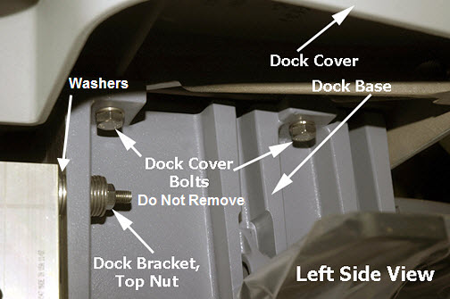
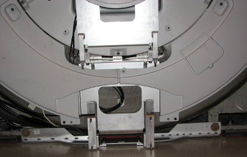
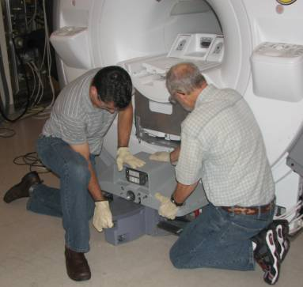
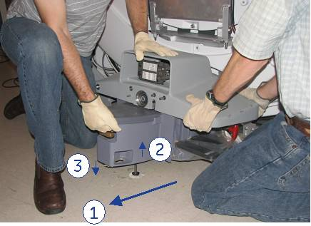
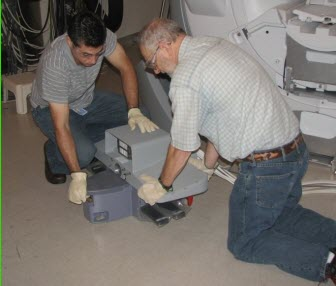

Operating Documentation
Direction 5440001-3, Rev# 6
Signa HDxt Service Methods
Module Version 4.0, Version Date 9/20/10
Operating Documentation |
| Required Persons | Preliminary Reqs | Procedure | Finalization |
|---|---|---|---|
| 2 | Not Applicable | 15 mins | Not Applicable |
| Item | Qty | Effectivity | Part# | Manufacturer | |
|---|---|---|---|---|---|
| Non-magnetic Service Tool Kit | 1 | - | 5112581 | - | |
| ||||
| FATAL ELECTRIC SHOCK HAZARD!! | ||||
| TO PREVENT FATAL ELECTRIC SHOCK, DISCONNECT POWER FROM THE PDU BEFORE YOU PERFORM THE FOLLOWING PROCEDURES. | ||||
| PERFORM LOCKOUT / TAGOUT PROCEDURE PER GE OSHA LOCKOUT / TAGOUT REQUIREMENTS LISTED IN THE FIELD SERVICE EHS MANUAL & TRAINING 2000 P/N 2135387-200. |
| ||||
| POSSIBLE PERSONAL INJURY! | ||||
| THIS PROCEDURE REQUIRES movement OF FERROUS MATERIAL IN CLOSE PROXIMITY TO THE MAGNET | ||||
| TWO FIELD ENGINEERS ARE REQUIRED AT ALL TIMES. |
| ||||
| Personal injury and equipment damage | ||||
| Strong Magnetic Field | ||||
| When servicing any magnetic equipment, it is critically
important that the service engineer consciously plan the path to be
taken when moving highly ferrous devices in the magnet environment.
the path should be as far from the magnet as practical. Safety Requirements
When planning a service path, it is critical that the path be clear and sufficiently wide. Ensure that there are no trip hazards, obstacles, clutter, slippery surfaces or other items even partially restricting the path. If there are portable obstacles in a path, remove them from the area and replace them after the service action is completed. It is required to walk the path prior to beginning service to ensure that there is sufficient space through which to pass for yourself and the object being serviced. |
Perform Lock Out Tag Out per the procedure for the LOTO for RF Amplifier and PEN Cabinet (Magnet Room) .
Undock the Patient Table and move it away from the magnet and out of the path between the dock and the magnet room exit door.
On the magnet, remove the right and left side skirt covers. For more information, see the Skirt Cover Removal and Install procedure.
Disconnect all cable connections from the magnet and the rear pedestal to the rear of the dock.
At the rear of the dock, use a ¾ inch non-ferrous wrench to LOOSEN {not remove} four (4) nuts (2 on each side) from dock bracket bolts. See Illustration, below.
Illustration 1: Dock Brackets

| NOTE: | It is necessary to remove only the nuts from the rear of the dock that connects it to the dock brackets. You do not have to remove the dock brackets from the magnet (see Illustration below). |
Illustration 2: Dock Brackets at Rear of Dock

| NOTE: | Any time you remove the dock from the magnet, you must check levelness and alignment of the dock and Patient Table when you reattach the dock to the magnet. As a helpful tip, before you move the dock from its position on the floor, use pieces of tape to mark points on the floor where the dock is to be replaced. |
| ||||
| back injury | ||||
| dock is heavy, weighing more than 50 lbs, and it contains ferrous material, making it strongly attracted to the magnet. | ||||
| two people are necessary to move dock out of magnet room to perform maintenance. FROM THIS POINT in the PROCEDURE, DOWNWARD PRESSURE MUST BE CONTINUOUSLY APPLIED TO THE DOCK SO AS TO PREVENT IT FROM BEING PULLED INTO THE MAGNET BORE. |
| ||||
| POSSIBLE PERSONAL INJURY! | ||||
| TO OPPOSE ANY PULL FROM THE MAGNET, FIELD ENGINEERS MUST APPLY CONTINUOUS DOWNWARD PRESSURE TO THE TOP OF THE DOCK EVEN WHEN LIFTING THE DOCK IN THIS STEP. | ||||
| DO NOT PLACE ANY PART OF THE HUMAN BODY IN THE PATH BETWEEN THE DOCK AND THE MAGNET. |
Applying pressure to the top of the dock, completely remove all dock attachment bolts, then remove washers. Take care with the washers that are placed between the dock and the bracket as they will need to be reinstalled in the same quantities and locations. See Illustration 1 for location of washers and Illustration 3 for position of field service personnel when removing hardware.
Illustration 3: Apply Pressure to Top of Dock and Remove Bolts

Clear the anchor stud out of the path of the dock assembly. There are two possibilities for how this may be done:
If the site has followed the pre-installation manual, then it should be possible to remove the top portion of the stud so that the dock may remain flush with floor during removal. This is the preferred method.
If the site has an anchor stud that protrudes vertically from the floor and cannot be removed, a non-conformance MUST be raised with the customer and the anchor must be fixed to comply with the Pre-Installation Manual prior to any future servicing of the dock. To complete the task this time, follow these steps:
Measure the height of the anchor stud as indicated in the illustration below. If the height exceeds 2 inches (5 cm), the magnet MUST be ramped down prior to removing or installing the Dock as there is significant risk of the magnet attracting the Dock if it needs to be raised more than 2 inches (5 cm).
Illustration 4: Measure the Height of the Anchor Stud

Use two people to pull the dock away from the magnet until the stud in the front is hitting the inner frame (labeled with (1) in Illustration 5).
Use two people to lift the dock JUST ENOUGH to clear the top of the stud in the floor. Pull the dock away from the magnet as far as possible (labeled with (2) in Illustration 5).
Place dock back on the floor immediately to the side of the anchor stud (labeled with (3) in Illustration 5).
Illustration 5: Pull Dock Away From Magnet, Lift to Clear Stud, Place on Floor to the Side of Stud

With two field engineers, one holding each side of the dock, slowly and deliberately slide the dock away from the magnet, keeping downward pressure on the top of the dock assembly. Move it to a distance equivalent to where the foot of the patient table would normally be located. See Illustration below.
Illustration 6: Apply Pressure to Top of Dock

When the distance between the dock and the magnet is at least equivalent to the distance between the magnet and where the foot of the patient table would normally be located, both field engineers may slowly lift the dock from the floor and exit the room.
| ||||
| POSSIBLE PERSONAL INJURY! | ||||
| THIS PROCEDURE REQUIRES MOVEMENT OF FERROUS MATERIAL IN CLOSE PROXIMITY TO THE MAGNET. | ||||
| Therefore, two Field engineers are required at all times. |
With two field engineers, one holding each side of the dock, enter the magnet room and place the dock on the floor where the foot of the patient table would normally be located.
With two field engineers, one applying vertical downward pressure to each side of the dock, slide the dock toward the magnet front.
Position the dock to clear the floor stud. There are two possibilities of how this may be done:
If the site has followed the pre-installation manual, then when reinstalling the dock it should be possible to remove the top portion of the stud. If this is the case, then continue to maintain pressure on the top of the dock and carefully slide the dock against the base of the magnet. Reinstall top portion of anchor stud.
If the site has an anchor stud that protrudes vertically from the floor and cannot be removed, a non-conformance MUST be raised with the customer and the anchor must be fixed to comply with the Pre-Installation Manual prior to any future servicing of the dock. To complete the task this time, follow these instructions per the reverse directions shown in Illustration 8.
Measure the height of the anchor stud as indicated in the illustration below. If the height exceeds 2 inches (5 cm), the magnet MUST be ramped down prior to removing or installing the Dock as there is significant risk of the magnet attracting the Dock if it needs to be raised more than 2 inches (5 cm).
Illustration 7: Measure the Height of the Anchor Stud
While maintaining pressure to the top of the dock, position the dock against the base of the magnet to the side of the floor stud at the front of the dock. (Number 3 in the illustration.)
Lift the dock just enough to clear the top of the stud in the floor. (Number 2 in the illustration.)
While rotating the dock, align the hole at the base of the dock with the stud and place the dock down into position. (Number 1 in the illustration.)
Illustration 8: Positioning Dock When Anchor Stud Cannot Be Removed
Reattach nuts and washers to dock bracket. See illustration below.
| NOTE: | Take care with the washers that are placed between the dock and the bracket. Ensure that the same number of washers is installed behind the dock on each bolt. |
Illustration 9: Dock Brackets
While placing continuous downward force on the top of the dock assembly, reconnect all cables from rear of dock to magnet I/O panels and rear pedestal.
Replace magnet right and left side skirt covers.
Redock the Patient Table.
Remove Lock Out Tag Out.
Ensure that dock Motor On switch operates properly when Table Up pedal is pressed.
Perform dock adjustments, refer to Dock Adjustments, and confirm proper alignment and centering for the dock and table.
Verify cradle travel into the bore is smooth.
Perform a “good-bye” or validation scan.